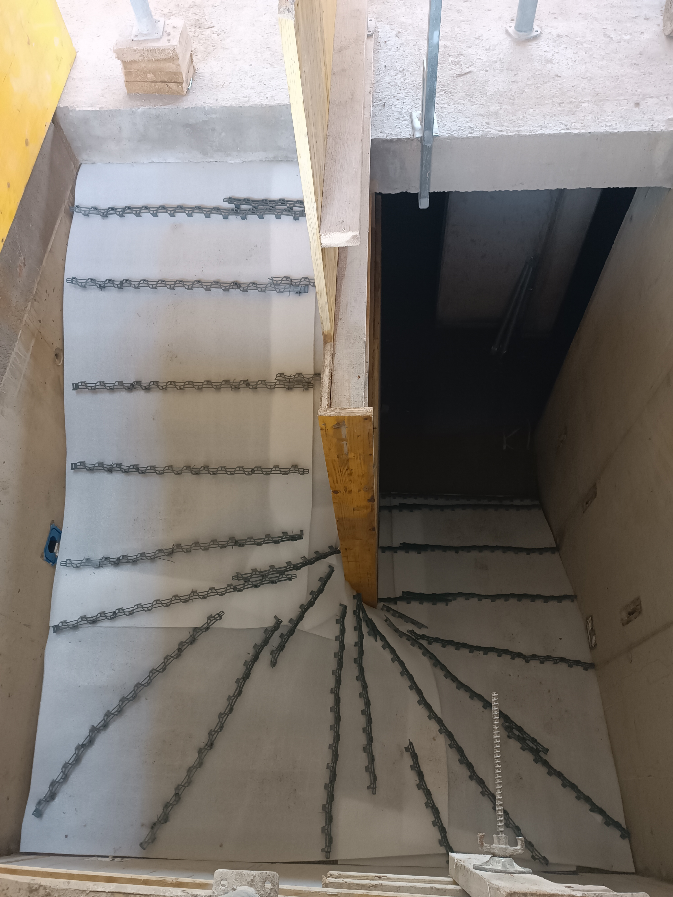
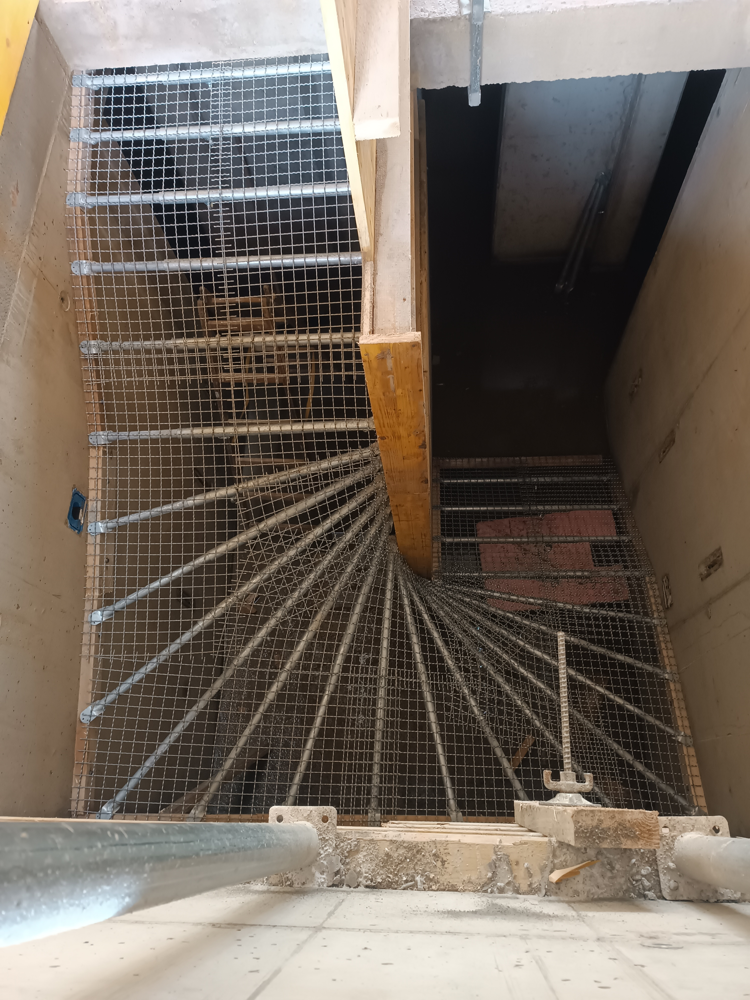
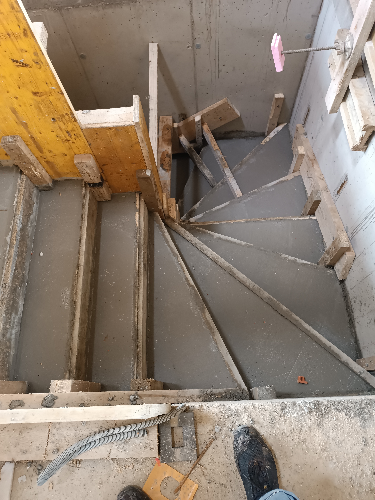
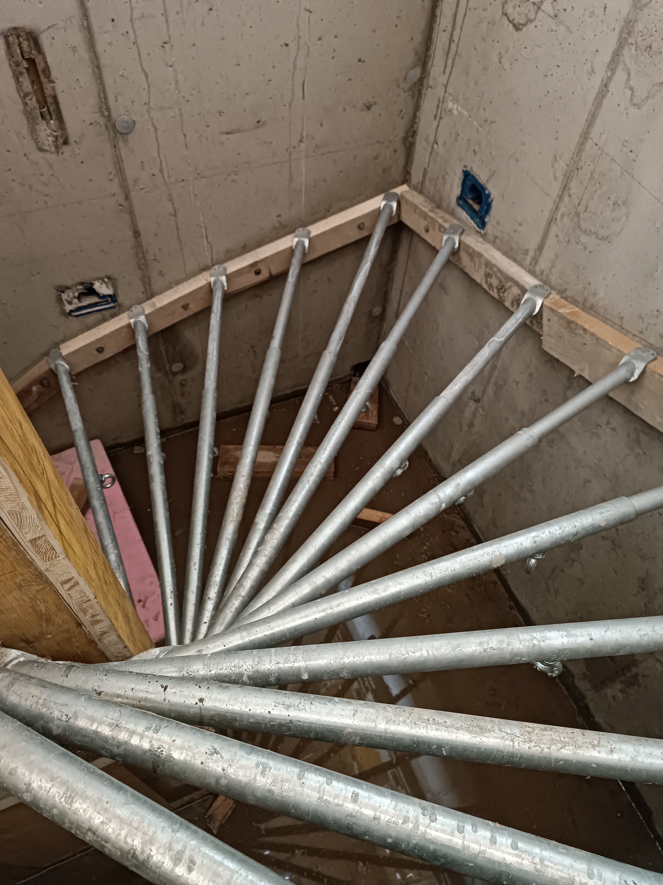
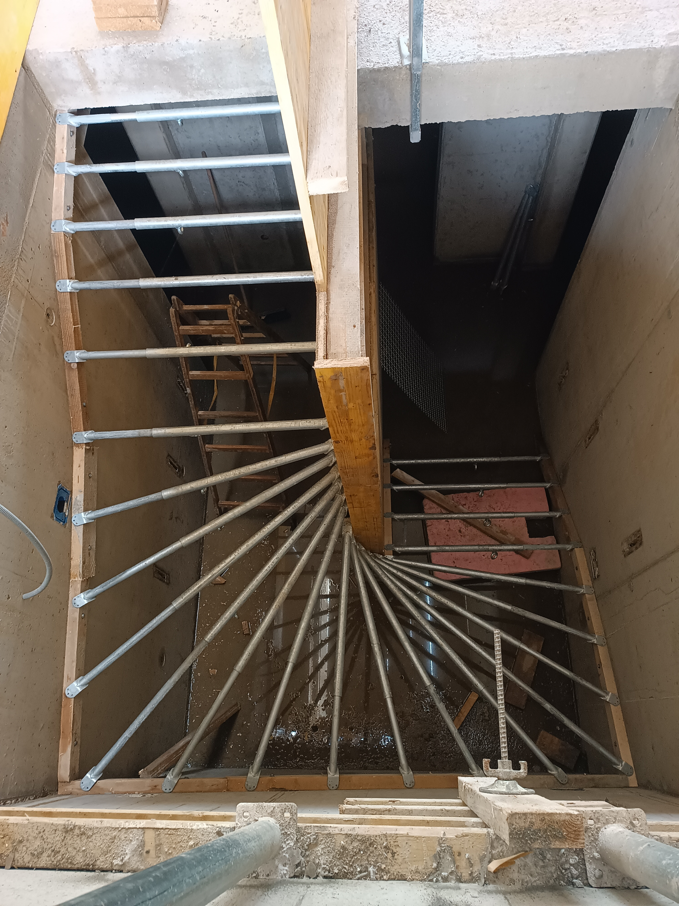
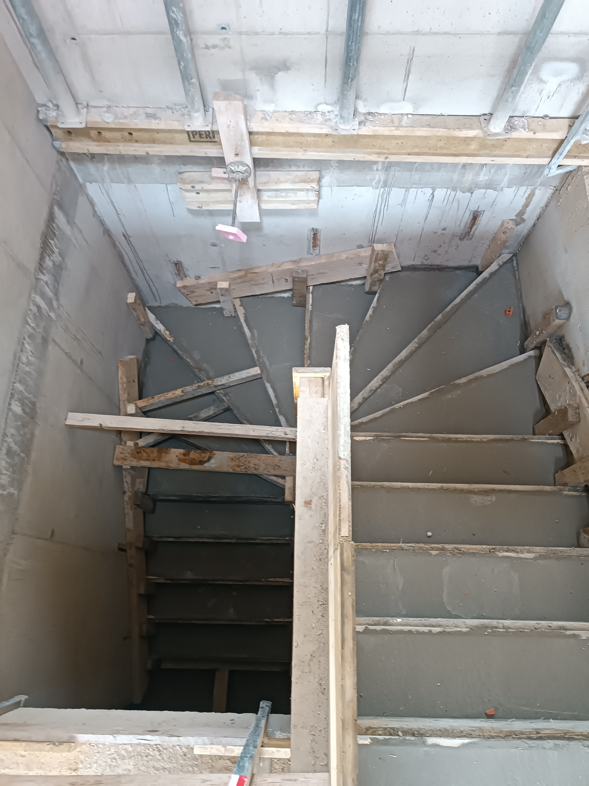
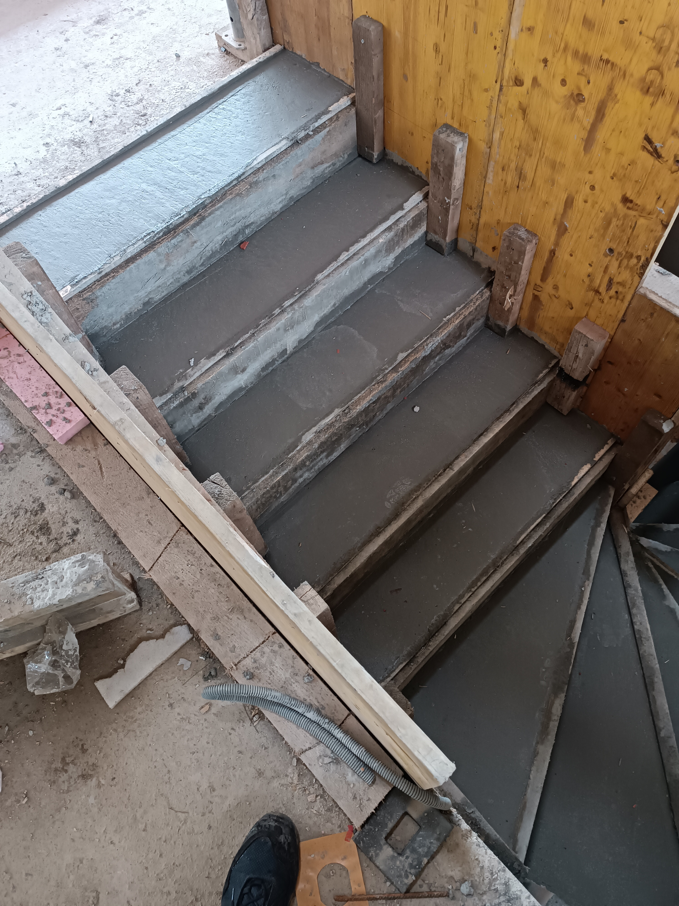

Treppen und Geländer
Herstellung und Montage von Beton- und Metalltreppen mit Geländern – für innen und außen.

Treppen nach Maß gefertigt
Wir fertigen und montieren Treppen, die Geschosse fest und schön verbinden – von Betontreppen im Rohbau bis zu gewendelten und geraden Metalltreppen mit Geländer. Jedes Stück passen wir an den Raum und die Maße vor Ort an. Unser Sitz ist in Maribor (Slowenien); wir arbeiten in der gesamten Steiermark und in ganz Slowenien.
- Betontreppen im Rohbau
- Metalltreppen – gerade, gewendelt und als Spindeltreppe
- Innen- und Außentreppen
- Metallgeländer und Handläufe
- Fertigung nach Maß und Montage vor Ort
Von der Bewehrung bis zum Geländer
Dieselbe Treppe in Phasen – von der Bewehrung und dem Betonieren bis zur Montage des Metallgeländers. Fotos von der eigenen Baustelle.

Bewehrung
Verlegen der Bewehrung und Mattenverstärkung in der Schalung vor dem Betonieren.

Betonieren
Betonierte Treppe in der Schalung – der tragende Teil des Treppenhauses.

Geländermontage
Einbau des Metallgeländers und Handlaufs – die fertige Treppe.



Fotos von der eigenen Baustelle.
Ablauf der Treppenfertigung
Vom Aufmaß vor Ort bis zur Montage kümmern wir uns um den gesamten Ablauf – wir können aber auch nur die Treppe oder nur das Geländer fertigen.
- Besichtigung und genaues Aufmaß vor Ort
- Abstimmung von Form, Material und Geländer mit dem Auftraggeber
- Fertigung von Treppe und Geländer nach Maß
- Montage und Befestigung vor Ort
- Endbearbeitung und Prüfung der Ausführung
Was kostet die Herstellung einer Treppe?
Der Preis hängt von der Treppenart (Beton oder Metall), der Form, den Maßen und dem gewählten Geländer ab. Nach einer Besichtigung oder anhand des Plans erstellen wir eine übersichtliche, unverbindliche Kostenschätzung.
Angebot anfragenHäufige Fragen
Welche Treppen stellen Sie her?
In welchem Gebiet montieren Sie Treppen?
Was kostet die Herstellung einer Treppe mit Geländer?
Brauchen Sie eine neue Treppe oder ein Geländer?
Rufen Sie an oder schreiben Sie – wir vereinbaren eine Besichtigung und eine Kostenschätzung.